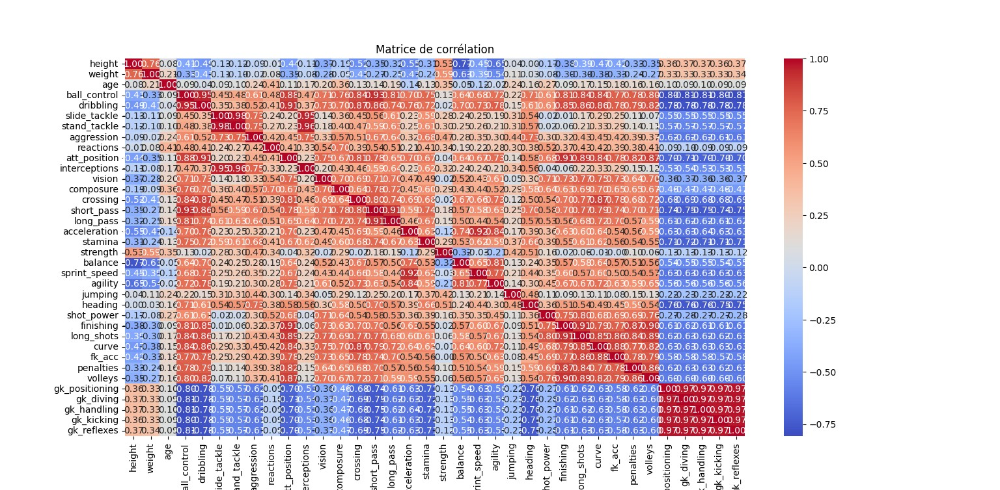
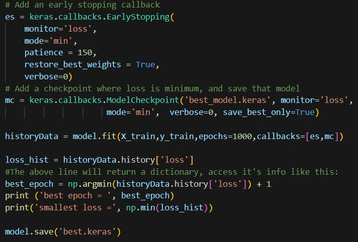
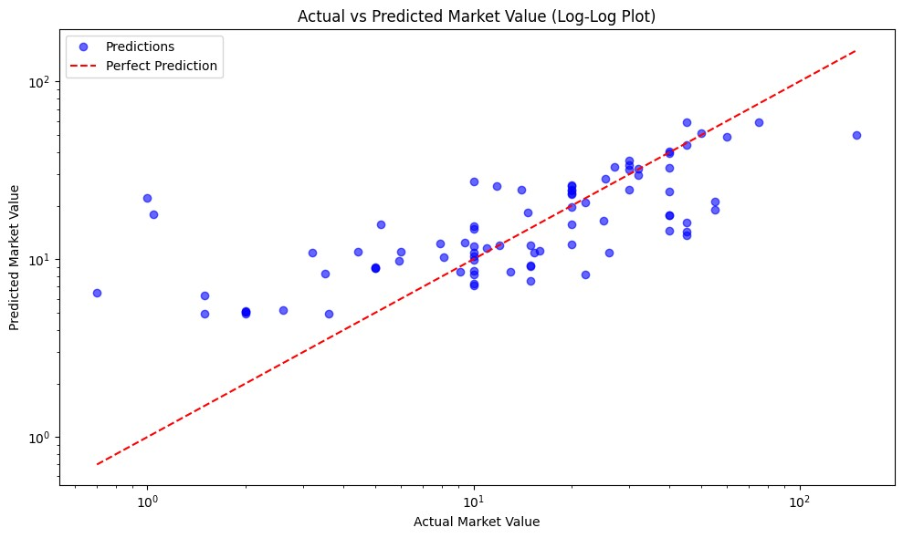
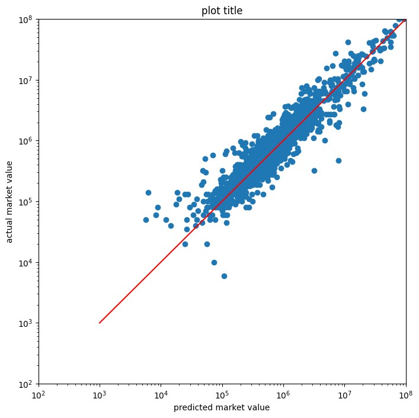

When Neymar transferred from Barcelona to PSG for a record €222 million, it underscored the stakes of player valuation. This project applies neural networks and machine learning to predict soccer players' market values from performance statistics and physical attributes — replicating, in a data-driven way, the process clubs use to price talent.
The project evolved through two distinct modelling programmes. The first targeted English Premier League outfield players using manually curated FIFA/Football Manager stats, iterating through feature selection, hyperparameter tuning, and regularisation. The second scaled to a FIFA24 global dataset of over 5,000 players, introducing Principal Component Analysis to manage 41-feature dimensionality before training a more robust network.
The initial dataset covered ~430 English Premier League outfield players (goalkeepers excluded due to differing stat profiles). Qualitative attributes — pace, shooting, passing, dribbling, defending, physicality — were sourced from FIFA and Football Manager, which are considered reliable proxies by professional football data scientists. Categorical features (team, nationality, position, preferred foot) were ordinal-encoded into 4 club tiers and 6 nationality regions before training.
A Random Forest Regressor with One-Hot Encoding identified which features most influenced market value. Club tier (Team_0) and Shooting emerged as top predictors. Position and Preferred Foot showed negligible importance and were subsequently dropped.
Initial 32→16→8→1 Dense network with ReLU failed to converge below a validation loss of 6.5. Switching to Leaky ReLU, reducing layer widths, and adjusting the learning rate brought the test MAE down to 10.1.
Dropout layers (20% rate) combined with L1/L2 weight penalties were applied to combat overfitting. Combined regularisation reduced the test MAE further to 9.64, demonstrating improved generalisation across unseen players.
The EPL model's limited dataset size constrained generalisation. Programme 2 switched to the FIFA24 Kaggle dataset — over 5,000 players with 41 physical attribute columns — and discarded club and nationality features entirely. This shift prioritised raw physical potential over contextual prestige, making the model useful for scouting talent at lesser-known clubs.
With 41 correlated input features, direct training was computationally costly and prone to multicollinearity. Principal Component Analysis (PCA) reduced the feature space to just 7 principal components while preserving over 90% of dataset variance. These components served as the neural network inputs. Two separate StandardScalers were fitted — one for inputs, one for the output — so predicted values could be inverse-transformed back to real market prices.


Three model configurations were benchmarked across the two programmes. The base Programme 2 network (16→32→32→1, ReLU, 1000 epochs with early stopping, patience=150) achieved a training loss of 0.04. A systematic dataset error — player values below €1M missing a decimal zero — was identified and corrected mid-analysis, substantially improving scatter alignment across the full value range.
Architecture: 32→16→8→1, Leaky ReLU. 80/20 train/test split, ~430 EPL players. Significant improvement over the baseline which failed to converge below val loss 6.5.
Dropout at 20% rate per hidden layer plus L2 kernel regularisation. Training/validation loss gap narrowed across 200 epochs, confirming reduced overfitting.
7 PCA components into 16→32→32→1 network. Training loss 0.04. Dropout variant tested (loss 0.102, MAE $1.27M) — performed worse, so base model was retained as final.


Programme 1: Club prestige dominated all physical attributes as a value driver — being at a top club is both cause and consequence of high market value, making it the most predictive single feature. English nationality carried a structural premium independent of skill due to EPL homegrown quotas.
Programme 2: When club and nationality are stripped away, physical attributes alone still predict market value with strong correlation across a 6-order-of-magnitude range. The $784K MAE is largely attributable to high-value outliers, where even small percentage errors translate to large absolute deviations.
The full model code including feature engineering, PCA pipeline, neural network architectures, regularisation experiments and prediction plots.